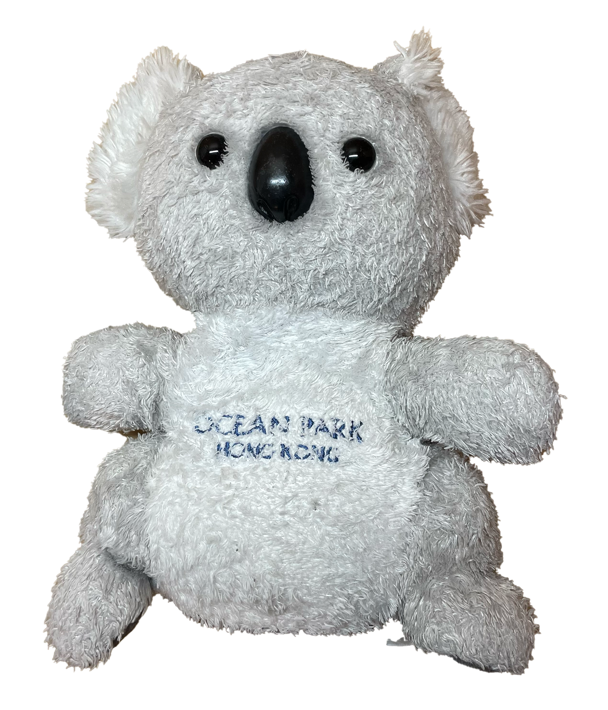
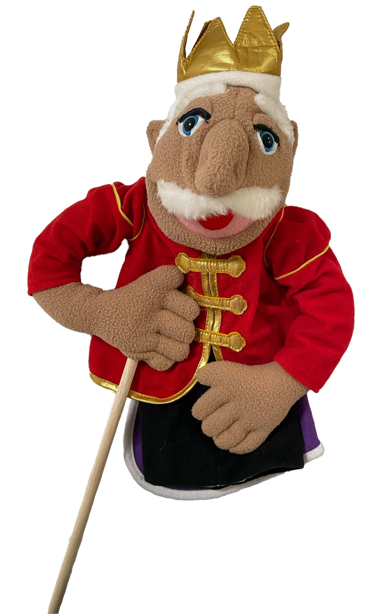
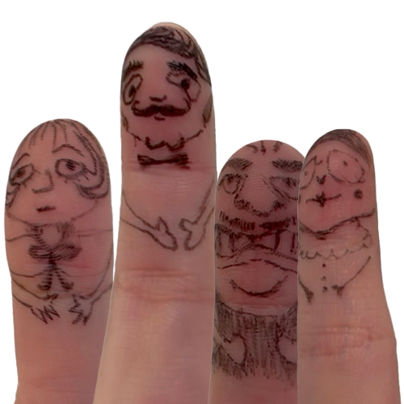
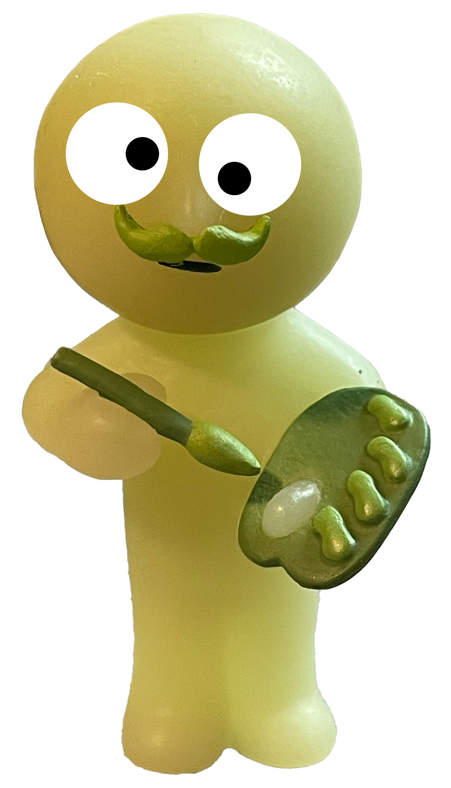
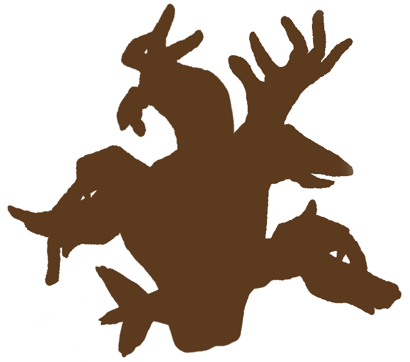

Kiwi is the Playbox's sleepiest, snuggliest resident. A champion napper with a sixth sense for when someone needs a hug. Those drowsy eyes blink open the moment a visitor arrives, and two fuzzy arms reach out for a warm embrace.
King McStache is the royal puppet of the Playbox, and Valkee the Puppet Keeper is his devoted guard pet. The two are almost never apart. Wherever the king goes, Valkee curls close behind, keeping a watchful eye with their button-bright gaze. As the oldest puppet in the box, his graying, mighty mustache gives him magical puppet charm…even if it tickles when he talks.
They like to interact.
They lead a group of like-minded individuals who also desire to be a puppet!
There are not a lot of kind-hearted beings like the unicorn.
The Shadow Shapeshifter is a mysterious puppet made from the silhouettes of many animals woven into one. In their normal form, they look like a swirling mix of creatures, but with a flicker of light, they can transform into any animal they wish. Their shifting form makes them both playful and unpredictable, but the other puppets know they always bring a touch of magic wherever they go.